HIPS Milky 200
Milky recycled HIPS material.
Reliable recycled plastic raw materials for manufacturers who need consistency, processability and commercial performance.
Singhal Plastics was established in 1986 and serves plastic processors with a broad basket of recycled polymers for commercial and technical applications.
Under the leadership of proprietor Neeraj K. Singhal, we operate from our factory in Narela and sales office in Kirti Nagar, New Delhi.
We supply recycled plastic granules for processors across injection moulding, extrusion and other industrial applications. Material discussions are based on polymer, MFI, colour, process and end use.
Browse by polymer family, then contact us with your required MFI, colour, application and monthly quantity.
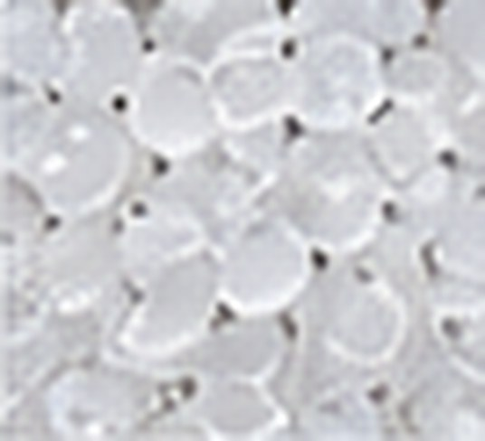
PolyolefinRecycled polypropylene for injection moulding and general-purpose processing.
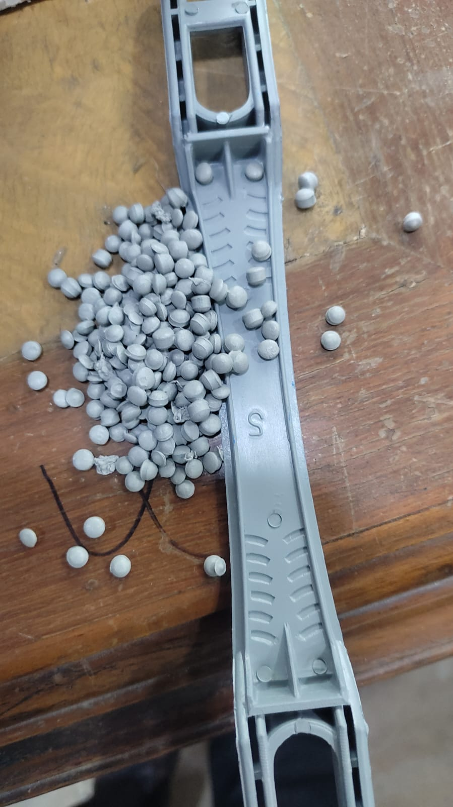
PolyolefinImpact-oriented polypropylene copolymer grades for durable moulded products.
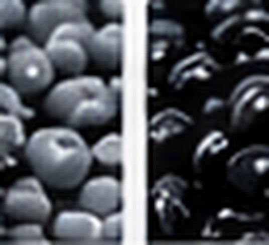
PolyolefinHigh-density polyethylene for rigid moulding, blow moulding and extrusion.
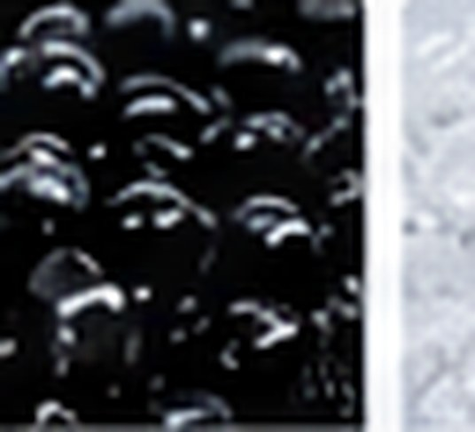
PolyolefinLow-density polyethylene for selected flexible and extrusion applications.
Explore LDPE →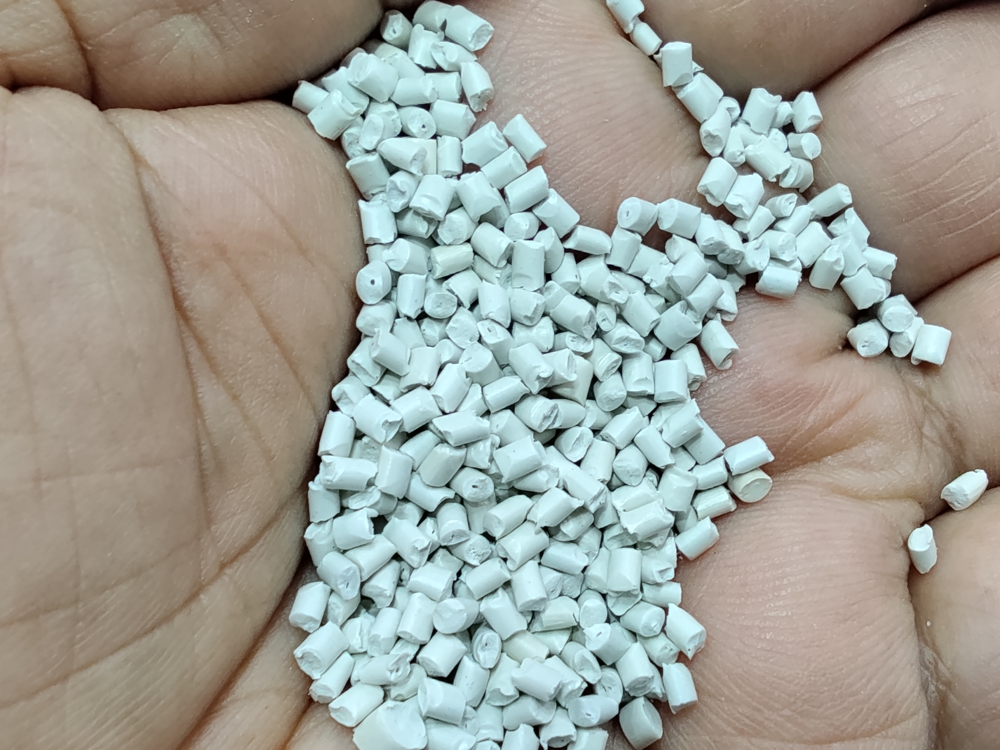
StyrenicHigh-impact polystyrene for moulded and sheet applications.
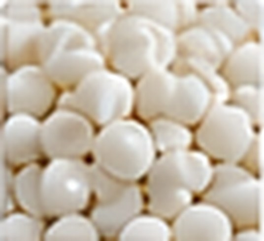
StyrenicBalance of rigidity, impact and finish for moulded components.
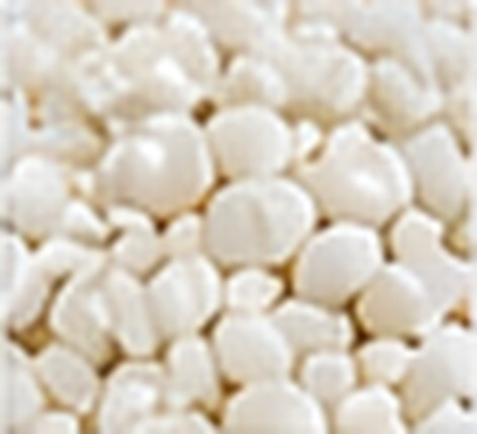
StyrenicReprocessed styrenic material supplied by application suitability.
Explore K-Resin →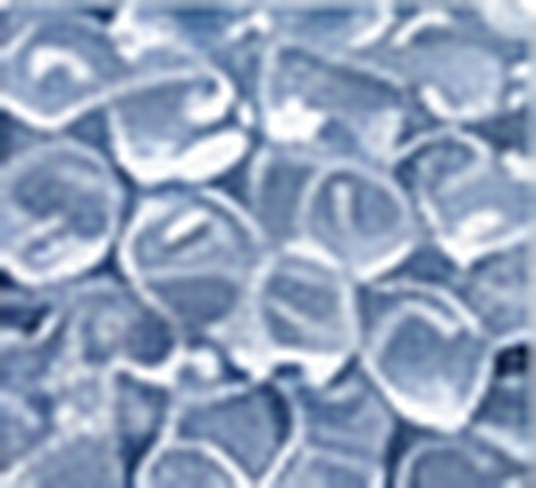
EngineeringReprocessed polycarbonate options for selected engineering uses.
Explore PC →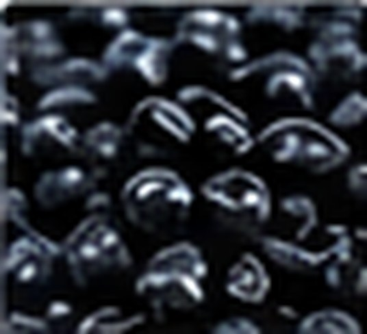
EngineeringRecycled polyamide materials for technical moulding applications.
Explore Nylon →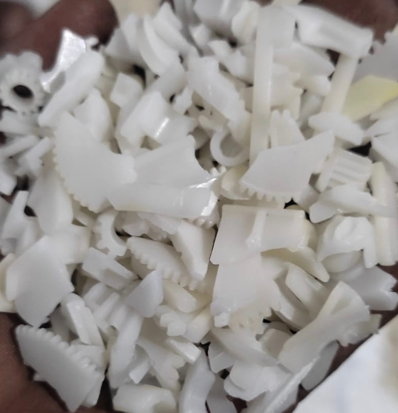
EngineeringReprocessed acetal material for selected precision applications.
Explore POM →Actual product photographs supplied by Singhal Plastics. Contact us for current grade availability, MFI, colour and application suitability.
Milky recycled HIPS material.
Grey recycled PPCP material.
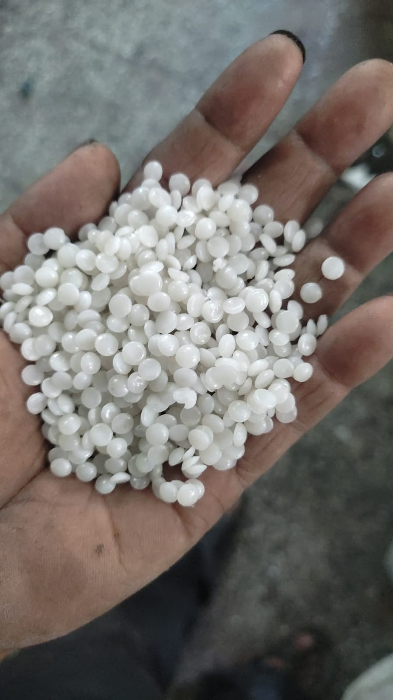
PPCPMilky recycled PPCP material.
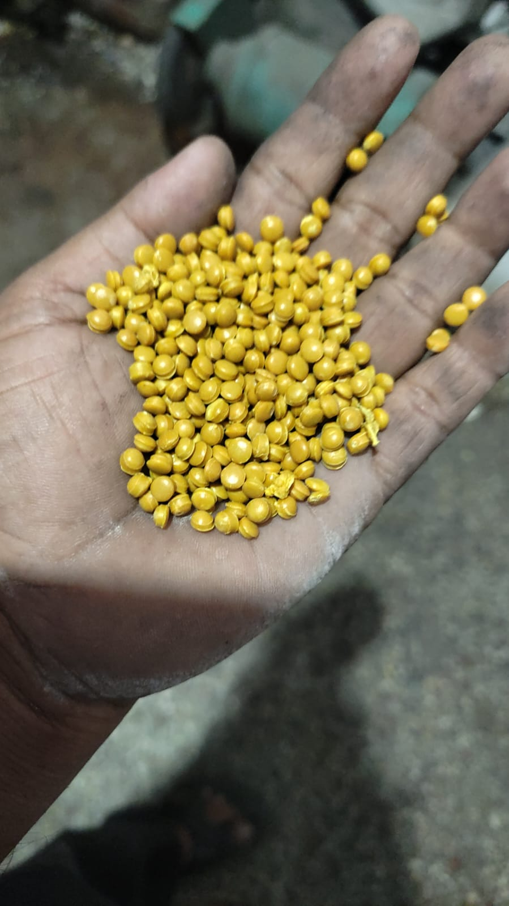
PPYellow recycled PP granules.
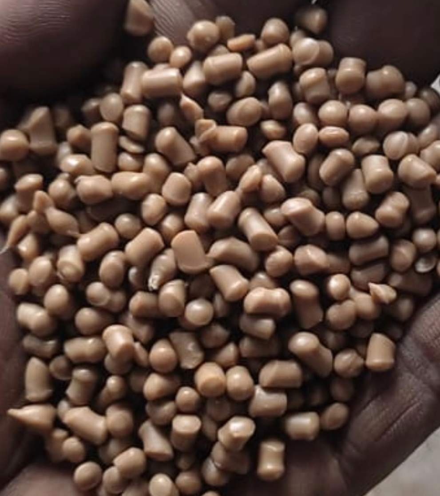
Engineering PolymerBeige colour Hytrel material.
Natural POM regrind.
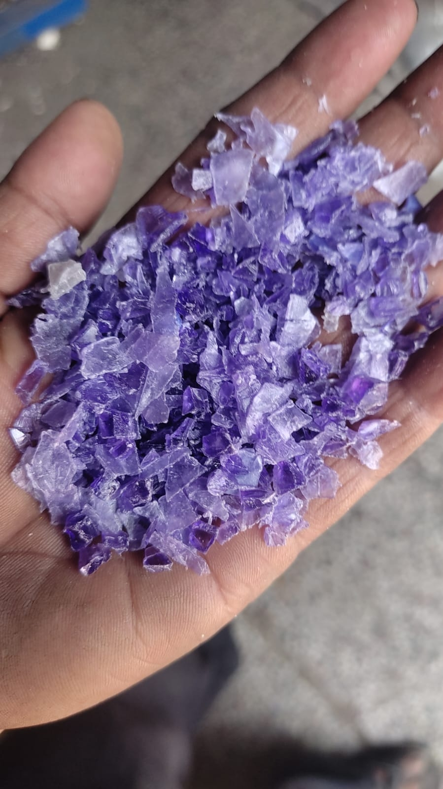
PETColour PET regrind — purple sample.
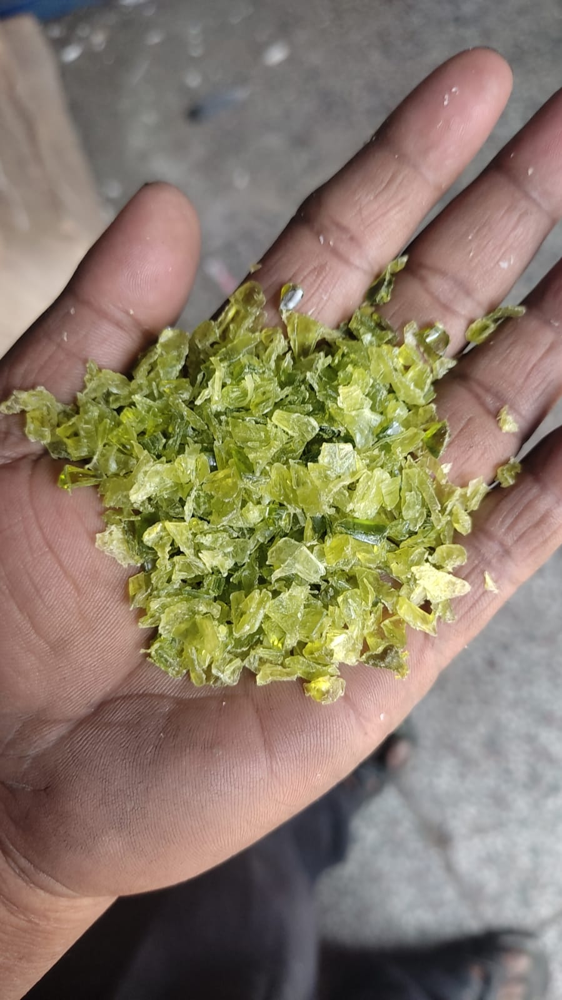
PETColour PET regrind — green sample.
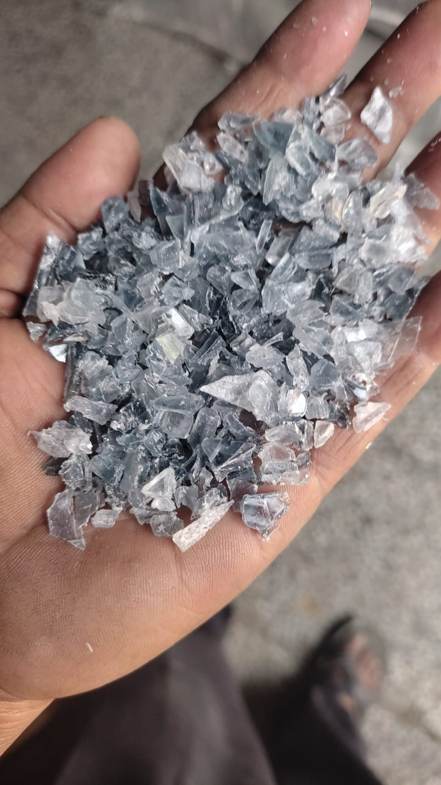
PETColour PET regrind — clear/grey sample.
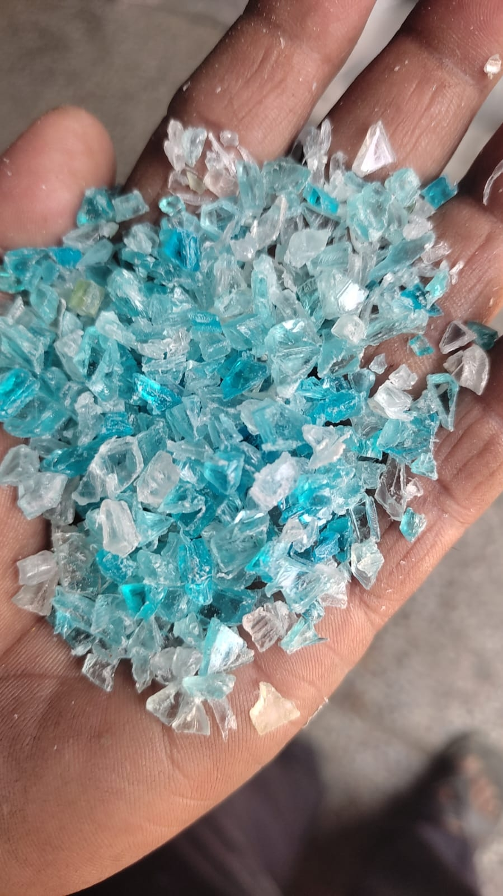
PETColour PET regrind — blue sample.
Tell us the product, process, polymer, MFI and colour requirement. We can then discuss suitable available recycled material.
Plastic chairs, crates, household products, large moulded articles and suitable industrial components.
PP · PPCP · ABS · HIPS and application-suitable gradesProfiles, sheets and extrusion-driven products, including suitable decorative profile applications.
Discuss polymer · MFI · colour · finishRecycled polymer options for suitable wall-panel, decorative moulding and photo-frame profile manufacturing.
Application-led material selectionRigid containers and selected hollow-moulded products where recycled material is appropriate.
HDPE · application-specific requirementsSinghal Plastics has worked in plastic raw materials since 1986, with its factory in Narela and sales office in Kirti Nagar, Delhi.
Decades of market experience serving processors looking for recycled PP, PPCP, HDPE, LDPE, styrenics and engineering polymers.
Explore Our Facility →Discuss polymer, MFI, colour, process, application and monthly consumption before material selection.
Confirmed grades are presented with available MFI, impact, mesh and ash information rather than generic claims.
Factory: B-2420, DSIIDC, Narela, Delhi – 110040.
Sales Office: Block I-111, Main Road, Kirti Nagar, New Delhi – 110015.
Buyers can share their processing requirement and request current availability, sample discussion and quotation directly.
Complete the requirement and send it directly to Singhal Plastics on WhatsApp. The details will be formatted automatically.
For prices, availability, samples or grade discussions, contact our sales office directly.
Our range includes PP, PPCP, HDPE, LDPE, HIPS, ABS, PC, Nylon, POM and K-Resin. Availability and suitability are discussed against your application requirement.
Our factory is at B-2420, DSIIDC, Narela, Delhi – 110040. Our sales office is in Kirti Nagar, New Delhi.
Yes. Send the polymer, required MFI, colour, manufacturing process, application and monthly quantity through the enquiry form or WhatsApp.
Use the Get a Quote section or WhatsApp +91 93136 36358 with your material requirement.